7210A60 R.R. FRONT PILLAR
- Path
- Procedures > 72 PANELS AND FRAME > 7210 REMOVING REFITTING > 7210A STRUCTURAL ELEMENTS (FRONT PART) > 7210A60 R.R. FRONT PILLAR
- Kind
- repair procedure (removal / refitting; the operation number is the code)
- Applies to
- all engines; all production periods
- Interactive page
- https://sloeber94.github.io/elrnDB-fUlss/en/#/179007957
Applies to: all engines; all production periods
Applies to: all engines; all production periods
 Removing
Removing
 Refitting
Refitting- Work on the component highlighted having previously made sure that the equipment illustrated below is available.
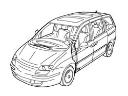
Applies to: all engines; all production periods
1. front pillar
2. Outer side member closing device
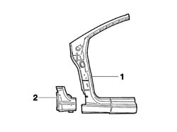
Applies to: all engines; all production periods
- Check that the components connected are not distorted by checking the bodyshell alignment measurements using suitable equipment (gauges, templates or jigs).
- Make the cuts and drill the holes in the front foot using a power saw and an 8 mm Æ drill bit to be fill welded later on as illustrated in the diagram.
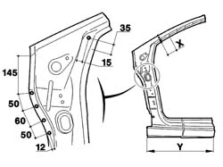
Applies to: all engines; all production periods
- Make the cuts and drill the holes in the front foot using a power saw and an 8 mm Æ drill bit to be fill welded later on as illustrated in the diagram.
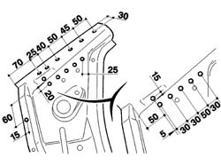
Applies to: all engines; all production periods
- Make the cuts and drill the holes in the front foot using a power saw and an 8 mm Æ drill bit to be fill welded later on as illustrated in the diagram.
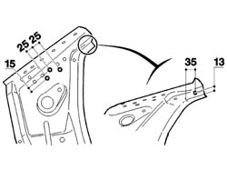
Applies to: all engines; all production periods
- Make the cuts and drill the holes in the front foot using a power saw and an 8 mm Æ drill bit to be fill welded later on as illustrated in the diagram.
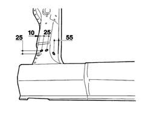
Applies to: all engines; all production periods
- Proceed with cutting (A) and grinding the spots (B).
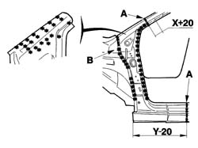
Applies to: all engines; all production periods
- Proceed with grinding the spots (C).
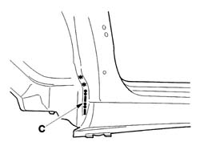
Applies to: all engines; all production periods
- Proceed with milling the spots (D) then remove the front foot.
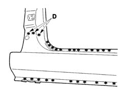
Applies to: all engines; all production periods
- Remove the residues from the bodyshell using a disc grinder and apply electro-galvanizing paint.
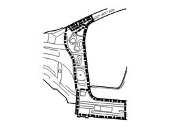
Applies to: all engines; all production periods
- Apply sealing compound in the areas illustrated in the diagram.
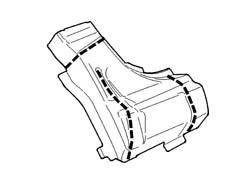
Applies to: all engines; all production periods
Refitting
Removing- Position the front pillar and the outer side member closing device and fasten using self-locking clamps; then, after having checked that the alignment is correct, make the final cut and remove and level the residues on the replacement part using a disc grinder and then apply electro-galvanizing paint.
- Weld the lower part of the side member closing device to the pillar as illustrated in the diagram using a spot welder.
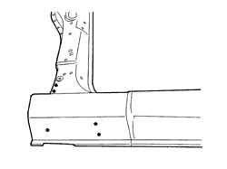
Applies to: all engines; all production periods
- Weld the side part of the side member closing device to the pillar as illustrated in the diagram using a spot welder.
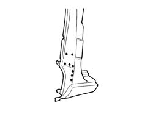
Applies to: all engines; all production periods
- Apply sealing compound along the treated area illustrated and structural adhesive at (E).
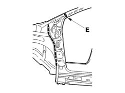
Applies to: all engines; all production periods
- Position the side member closing device and pillar assembly and MIG weld as illustrated (F) the, grind the welds using a disc grinder.
- Proceed with the fill welding in the areas illustrated in the diagram (G)
- Proceed with the brazing in the area illustrated in the diagram (H)
- Grind the welds made previously using a disc grinder.
- Weld the remaining areas illustrated in the diagram using a spot welder.
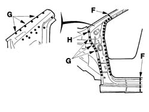
Applies to: all engines; all production periods
- Weld the remaining areas illustrated in the diagram using a spot welder.
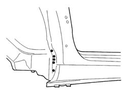
Applies to: all engines; all production periods
- Proceed with the MIG fill welding (I) and then use a spot welder as illustrated in the diagram and a disc grinder to grind the welds.
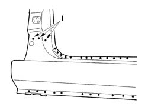
Applies to: all engines; all production periods
- Finish off by surfacing in the area illustrated in the diagram.
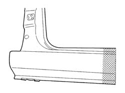
Applies to: all engines; all production periods
- Apply sealing compound as illustrated.
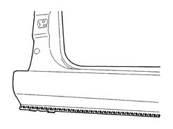
Applies to: all engines; all production periods
- Apply sealing compound as illustrated.
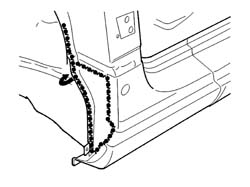
Applies to: all engines; all production periods
- Check that the welded component is correctly positioned.
- Apply electro-galvanizing paint to the ground parts.
- Proceed with waxing the box sections.